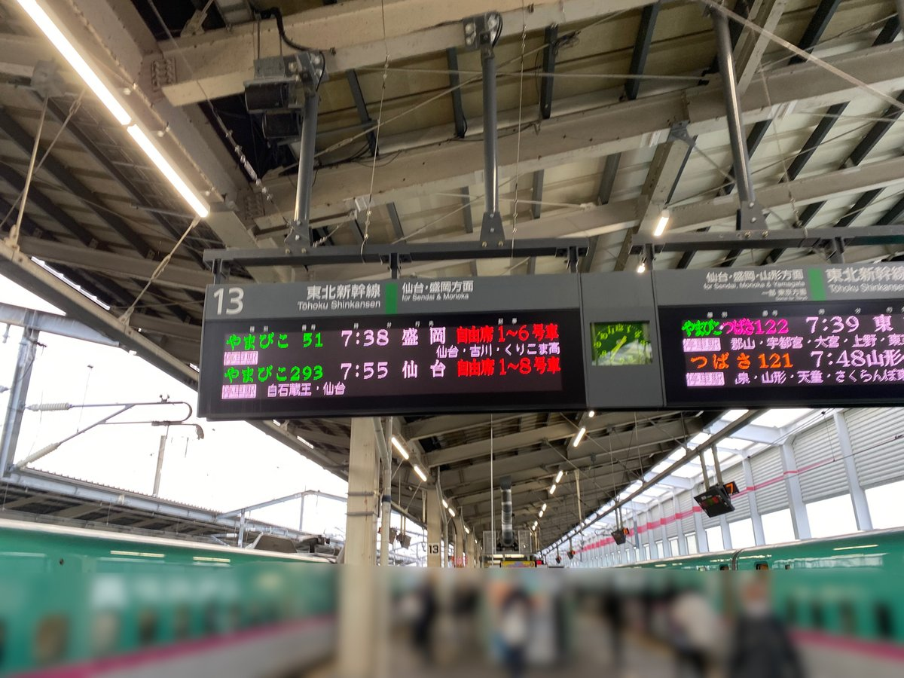
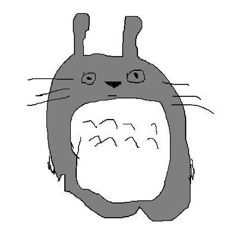
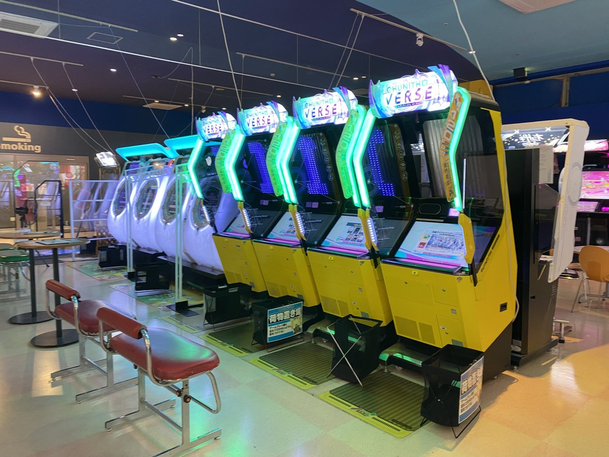

公開
CHUNITHM 全国行脚3周目
2024年12月12日〜21日の10日間で47都道府県を回り、「燦・天下統一」を達成しました。移動ルートや訪問したゲーセンをnoteにまとめています。
noteで読む
@asaburodesu
アキバで音ゲーをしたり、全国のゲーセンを巡ったりしています。
行脚用の店舗マップを作って、旅のことはnoteや同人誌に書いています。同人サークル「Prime!」では取材・制作・システムを担当しています。

CHUNITHM・オンゲキ・maimaiを中心に遊んでいます。チュウニズムでは、チーム「行脚が終わると行脚が始まる」に所属しています。
SEGA 3機種に加えて、アイドルマスターツアーズとポラリスコードでも全国制覇しています。

公開
2024年12月12日〜21日の10日間で47都道府県を回り、「燦・天下統一」を達成しました。移動ルートや訪問したゲーセンをnoteにまとめています。
noteで読む同人サークル「Prime!」で、prime soleilと2人で活動しています。取材したことを本にまとめるほか、頒布に使うシステムの制作や応援企画にも取り組んでいます。
オンゲキのキャラクターや名前にちなんだ場所を訪ねる紀行本です。取材・執筆を担当し、コミケなどでシリーズを頒布しています。
サークルの会計・在庫管理に使うPOSレジを自作しています。イベントでの頒布に使いながら、開発・運用しています。
prime soleilと「Pure Marble -未来彩る君へ-」を企画し、2026年8月に日向市駅で掲出しました。